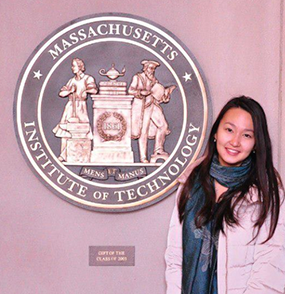

В преддверии 8 Марта интернет-проект Ел.кз продолжает знакомить своих читателей с казахстанками, которые добились успеха в разных сферах деятельности. Героиней сегодняшнего материала стала Дана МУКУШЕВА - студентка Massachusetts Institute of Technology
- Дана, расскажите о себе? Как прошли ваши школьные годы?
Большую часть своей школьной жизни я провела в математико-экономическом лицее №1 города Астаны, где я обучалась с 1 по 9 классы. Это была хорошая школа с сильной базой знаний и прекрасными учителями, которые и привили мне любовь к математике, физике и литературе. Родители старались воспитать меня разносторонним человеком, водили в музыкальную школу, несмотря на мое нежелание, секции иностранных языков и тому подобное. Интересно, что именно при поступлении в MIT я поняла всю важность и дальновидность их действий, так как помимо отличных оценок учитывалась разносторонность абитуриента. После 9-го класса я перешла в РСФМСШИ им О. Жаутыкова, которую и закончила со знаком «Алтын Белгі». Мне хотелось испытать себя, смогу ли я учиться в сильнейшем физмате страны? Это оказалось нелегко, все ребята были очень умны и трудолюбивы, и приходилось вкладывать все свои силы. В РСФМСШИ я участвовала в олимпиадах и научных соревнованиях, и это укоренило во мне конкурентоспособный дух и уверенность. Физмат научил меня много работать, уроки математики развивали аналитические способности, и впервые я начала задумываться о профессии в технической сфере.
- Дана, расскажите о себе? Как прошли ваши школьные годы?
Большую часть своей школьной жизни я провела в математико-экономическом лицее №1 города Астаны, где я обучалась с 1 по 9 классы. Это была хорошая школа с сильной базой знаний и прекрасными учителями, которые и привили мне любовь к математике, физике и литературе. Родители старались воспитать меня разносторонним человеком, водили в музыкальную школу, несмотря на мое нежелание, секции иностранных языков и тому подобное. Интересно, что именно при поступлении в MIT я поняла всю важносБольшую часть своей школьной жизни я провела в математико-экономическом лицее №1 города Астаны, где я обучалась с 1 по 9 классы. Это была хорошая школа с сильной базой знаний и прекрасными учителями, которые и привили мне любовь к математике, физике и литературе. Родители старались воспитать меня разносторонним человеком, водили в музыкальную школу, несмотря на мое нежелание, секции иностранных языков и тому подобное. Интересно, что именно при поступлении в MIT я поняла всю важносБольшую часть своей школьной жизни я провела в математико-экономическом лицее №1 города Астаны, где я обучалась с 1 по 9 классы. Это была хорошая школа с сильной базой знаний и прекрасными учителями, которые и привили мне любовь к математике, физике и литературе. Родители старались воспитать меня разносторонним человеком, водили в музыкальную школу, несмотря на мое нежелание, секции иностранных языков и тому подобное. Интересно, что именно при поступлении в MIT я поняла всю важносБольшую часть своей школьной жизни я провела в математико-экономическом лицее №1 города Астаны, где я обучалась с 1 по 9 классы. Это была хорошая школа с сильной базой знаний и прекрасными учителями, которые и привили мне любовь к математике, физике и литературе. Родители старались воспитать меня разносторонним человеком, водили в музыкальную школу, несмотря на мое нежелание, секции иностранных языков и тому подобное. Интересно, что именно при поступлении в MIT я поняла всю важность и дальновидность их действий, так как помимо отличных оценок учитывалась разносторонность абитуриента. После 9-го класса я перешла в РСФМСШИ им О. Жаутыкова, которую и закончила со знаком «Алтын Белгі». Мне хотелось испытать себя, смогу ли я учиться в сильнейшем физмате страны? Это оказалось нелегко, все ребята были очень умны и трудолюбивы, и приходилось вкладывать все свои силы. В РСФМСШИ я участвовала в олимпиадах и научных соревнованиях, и это укоренило во мне конкурентоспособный дух и уверенность. Физмат научил меня много работать, уроки математики развивали аналитические способности, и впервые я начала задумываться о профессии в технической сфере.
Комментарии